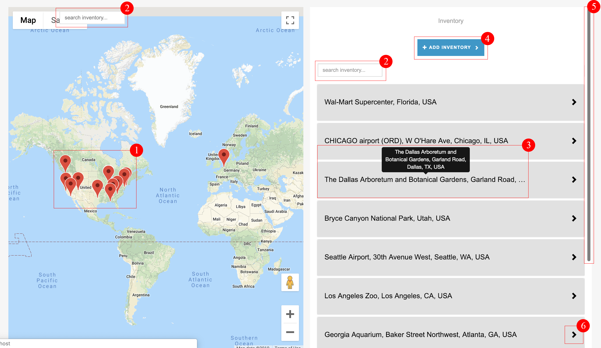

Live Reach Media
About the company:
We facilitate and provide analytical insights into digital out-of-home advertising.
Users:
There are two types of users,
Publishers: ones who maintain the digital inventory (for
example digital displays and billboards, their locations etc).
Advertisers: who wish to play their advertisements on the inventory
maintained by the
publisher.
Purpose of the product:
To provide analytics based solutions for digital out-of-home advertising and facilitating interactions between display owners & advertisers.
My Role:
To design and develop a web interface to faciliate the interaction between advertisers and publisher and also visualize the analytics we produce.
Team Members:
Four front-end developers alongside
Process
The process we follow at Livereach Media is quite similar to a software development process but is paced at a very quick rate. We try to cover each of these phases in about a max of two days so that each feature is released soon.IDEA
DESIGN
DEVELOP
TEST
INTEGRATE
DEPLOY
Problem Identification
UI Evaluation
User feedback
I was communicated that the users found it difficult to navigate around and significant features were masked behind buttons and accordions which made them difficult to discover without a prior demo. A detailed survey led to the following points:
- The map is congested with pins that don't make much sense. There is no way to determine which pin represents corresponding location.
- Congested UI; Too many operations filled in one place.
- The map size is small, therefore it is difficult to plot devices.
- Many features are abstracted and are not easy to carry out without prior knowledge.
Solution
Problem correction

Restructuring Inventory Hierarchy
- Location: A point on a google map denoting the physical co-ordinates of the inventory.
- Site: An image of a site layout containing multiple devices.
- Device: A physical device that logs data which is required to compute our metrics.
- Zone: A cut out from a site, which is a special area of interest for data & metric visualization.

Inventory Addition
Adding Locations
Improvements made
- Added location categories so as to distinguish between inventory types and quick access
- Map area increased at the time of addition so as to have wider area for plotting
- Enabled searching with address input box to speed up the location plot process.
- Pins are made draggable to adjust location easily & precisely.
Adding Sites
Improvements made
- Widened site map area to precisely edit site image.
- Added image editing tools so that site images can be edited on the go, one need not search for editors to crop and rotate images.
Adding Devices
Improvements made
- Enabled zooming(bottom right corner) into images for precise plotting of device pins.
- As users need to add multiple devices at a given time, the page doesn't refresh/go back to the display inventory page unless you hit "Done".
- Implemented draggable pins to precisely adjust the pins.
Adding Zones
Improvements made
- Zoom and Crop options to easily cut out zones.
- Zones can be cut out from a minimum of three devices and hence added appropriate error messages, refer below
Feature Design & Development
Heat Maps
Task: Live tracking of population in a restricted area(zone) to be able to determine trends and patterns in movement. The below image shows the population distribution in a supermarket.

Path Visualization
Task: Given a source zone, track movements between zones and visualize this data to determine the top popular and populous paths.

Analytics Design
Early Exploration Wireframe

Wireframes developed

Quick Mockup of the finalized version